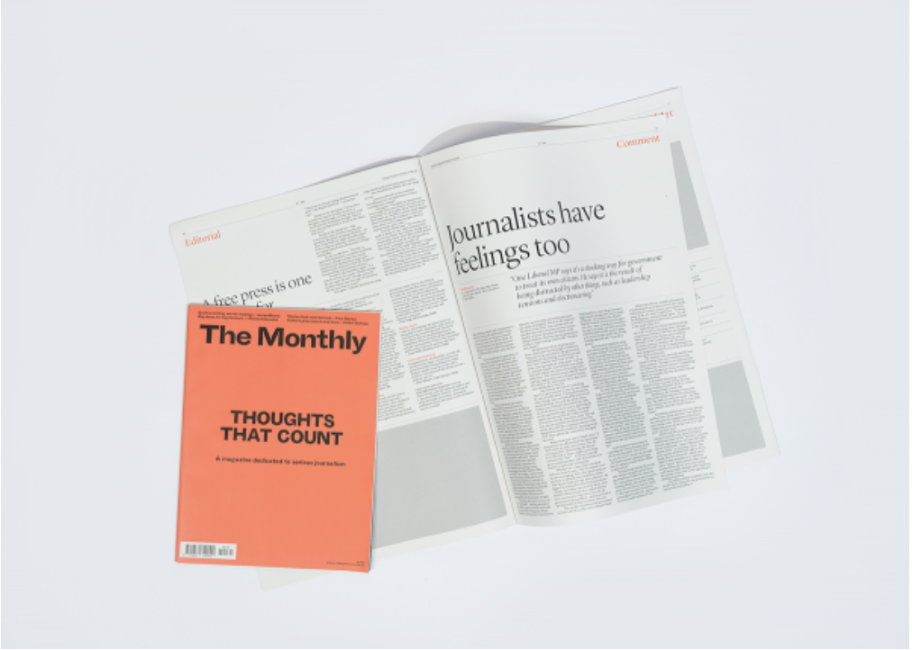

Journalism
Our journalists create in-depth, independent, original public interest reporting, focusing on storytelling and insight.


Schwartz Media publishes intelligent news and current affairs that breaks the 24-hour news cycle. We offer a nuanced examination of Australia and the world, focused on fresh insight and literary expression. Our audience reads to know, not just to agree. We invest in long-form journalism where the issues demand it, providing writing of a quality that makes difficult topics clear. Schwartz Media publishes Australia’s most respected writers across The Saturday Paper, The Monthly magazine and the daily podcast 7am, alongside our sister publications, Quarterly Essay and Australian Foreign Affairs.
View our CompaniesOur journalists create in-depth, independent, original public interest reporting, focusing on storytelling and insight.
The Monthly publishes long-form journalism from the nation's leading writers and thinkers, covering Australian politics, culture and ideas.
OThe Saturday Paper is a weekly newspaper, dedicated to telling the whole story. It publishes long-form accounts of the week’s key stories.

7am is a daily news podcast that tells the big stories through in-depth interviews and sharp analysis.
Quarterly Essay is the leading agenda-setting journal of politics and culture in Australia.
Australian Foreign Affairs is the country’s leading foreign affairs journal.
Get in touch with our advertising team.

In collaboration with Alpha60, The Saturday Paper and The Monthly bring you a tote bag.

Give The Saturday Paper or The Monthly as a gift.
Work at the country’s leading independent publisher.
Keep in touch with what is happening at Schwartz Media.
Get in touch with our editorial and advertising teams.